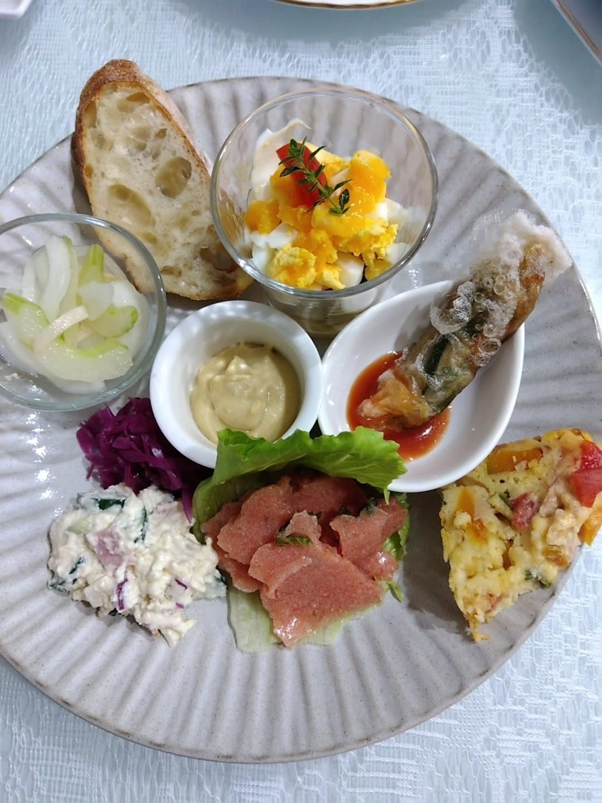
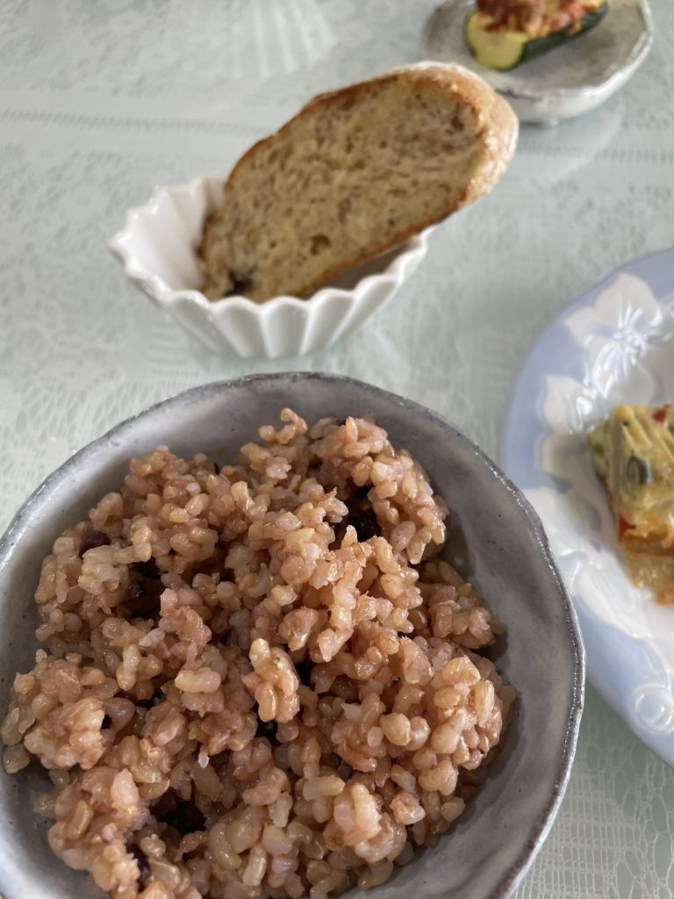
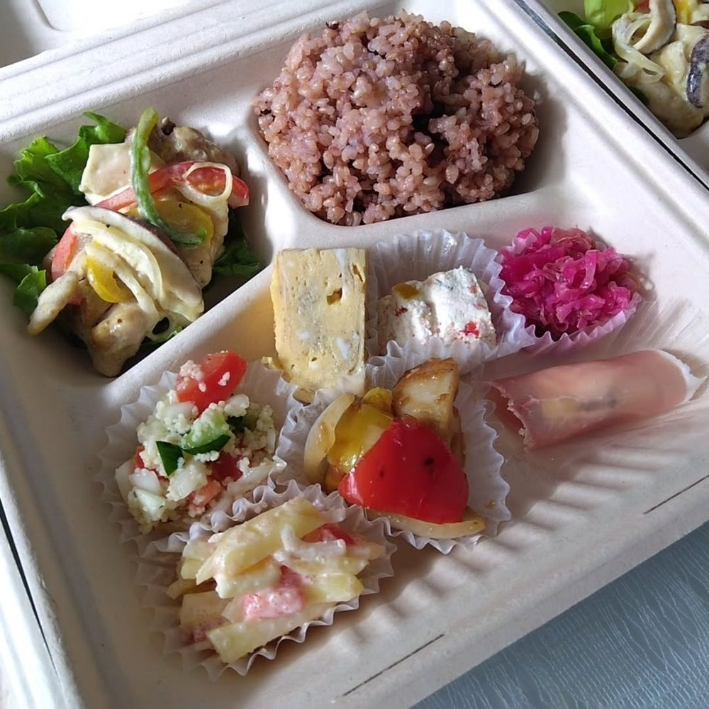
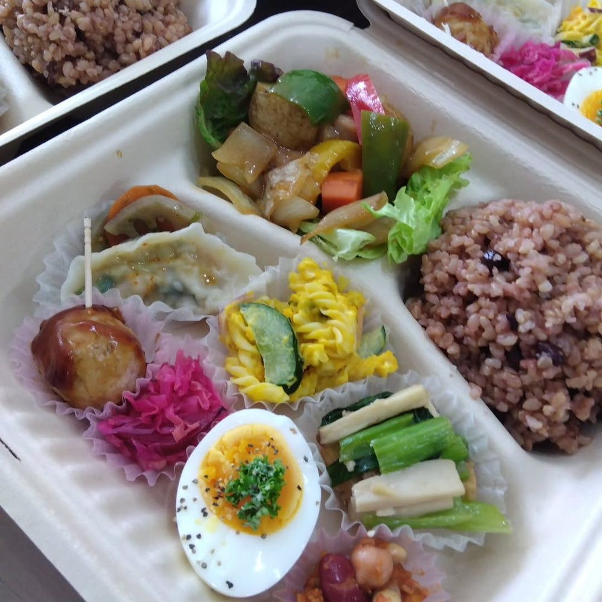
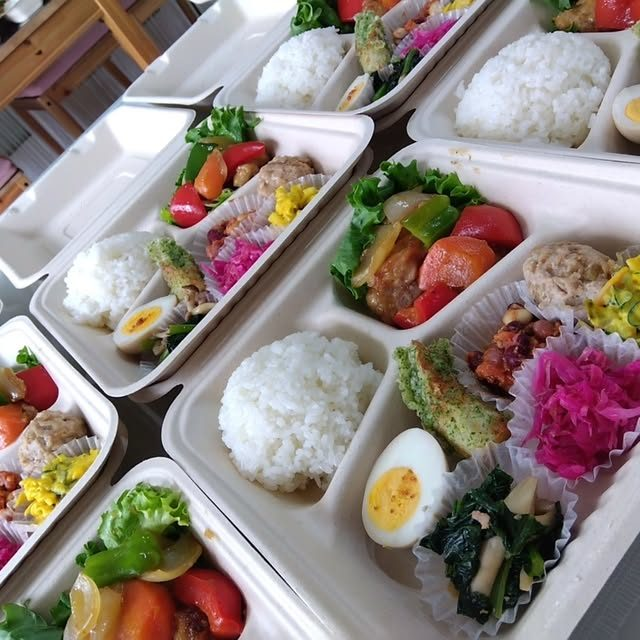
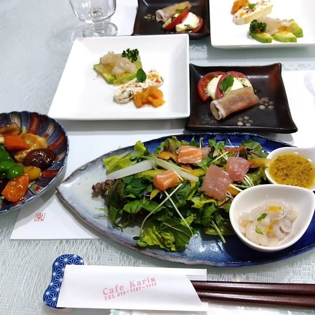
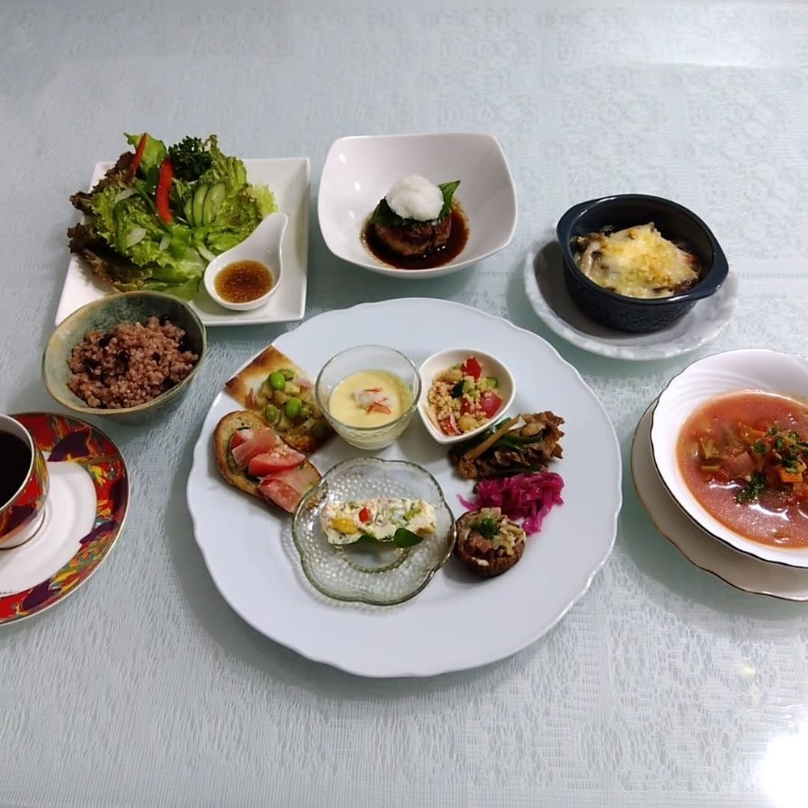
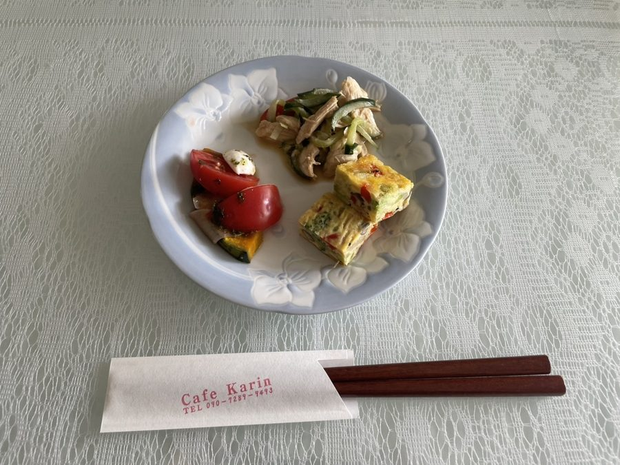
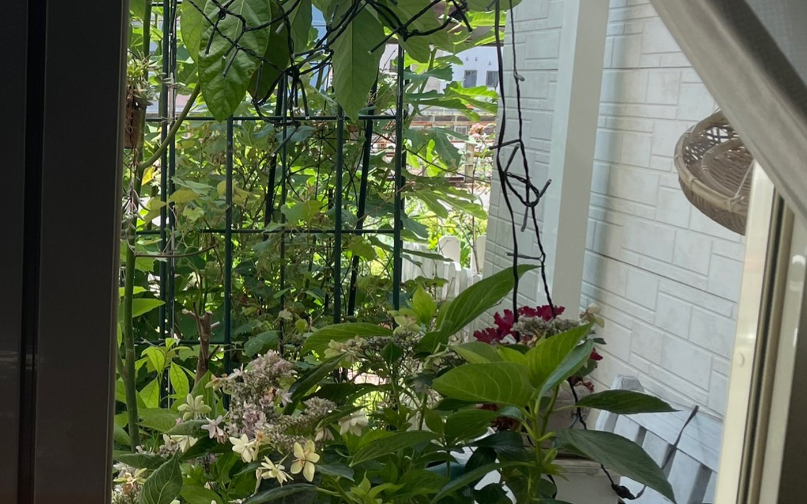
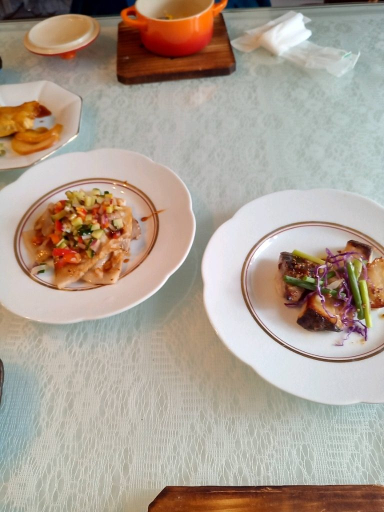

栃木県野木町 友沼
月替わりの献立で、旬のお野菜を中心にお出ししております。
ご予約をいただいてからお作りする、小さなカフェです。

ある日のランチプレートです。多い日は、ひと皿に三十種ほどの食材が入ります。
ランチプレート 1,500円（税込・お飲み物付き）／
ご予約は前日までに
営業時間を確認中火曜〜土曜 11:30〜17:00
お昼は、ご予約をいただいた方のぶんだけお作りしております。 ご予約のないお日にちは、お店を開けていないことがございますので、 お手数をおかけしますが、前日までにお電話をいただけますと幸いです。 お日にちが迫っているときも、一度お電話でお尋ねください。
お名前・ご人数・お越しになるお時間をお聞かせください。お席は火曜〜土曜の 11:30〜17:00 でご用意しております。お食事のお時間は、お電話のときにご相談ください。
お肉が苦手な方には高野豆腐でお作りするなど、できるかぎりお応えいたします。アレルギーも遠慮なくお知らせください。
日曜・月曜・祝日はお休みをいただいておりますが、5名様以上でしたらご相談を承ります。ご人数がまとまるとき、お祝いの席でごゆっくりされたいときも、お電話のときにお申し付けください。
お支払いは現金のみとさせていただいております。お車でお越しいただけます（駐車場がございます）。
自宅のリビングを改装してはじめた、小さなカフェです。お出しするのは月替わりのランチプレート。 国産の食材だけを使い、旬のお野菜を中心に、ひと皿にできるだけ多くの種類を盛り込んでおります。
お米は、契約農家さんの減農薬のお米を酵素玄米に炊いております。白いご飯もご用意しておりますので、 ご予約のときにお申し付けください。ビーツなど一部のお野菜は、無農薬のものをお取り寄せしております。
お肉を召し上がらない方には、高野豆腐などに置き換えてお作りしております。 薬膳の考え方を取り入れた一品も、季節に合わせてお出ししております。

1,500円税込・お飲み物付き
1,000円税別・お一つ
完全予約制お献立に合わせて
お集まりやご法要の席へ、お弁当をお詰めしております。 中身はランチと同じく、国産の食材だけでお作りしております。 お日にちとお数が決まりましたら、お早めにお電話ください。



ナイトカフェは完全予約制でお受けしております。お献立はご予算とお好みに合わせてお作りしますので、 お集まりやお祝いの席にもお使いいただけます。ご予算の目安も、お電話で遠慮なくお尋ねください。



自宅のリビングを改装した、テーブルがいくつかだけの部屋です。 窓のそとの庭では、季節ごとに花が咲きます。ごゆっくりお過ごしください。


| 住所 | 〒329-0101 栃木県下都賀郡野木町友沼5898-26 |
|---|---|
| 電話 | 090-7289-9493 お店のお電話はこちらの番号です。 |
| 営業時間 | 火曜〜土曜 11:30〜17:00 ランチは前日までのご予約制です。お食事のお時間は、ご予約のお電話のときにご相談ください。 夜のナイトカフェは完全予約制で承ります。 |
| 定休日 | 日曜・月曜・祝日 5名様以上でしたら、定休日もご相談を承ります。 |
| お席 | テーブル席／全席禁煙 |
| 駐車場 | ございます |
| お支払い | 現金のみ |
お近くまでお越しになって分からないときは、ご遠慮なくお電話ください。道順をご案内いたします。